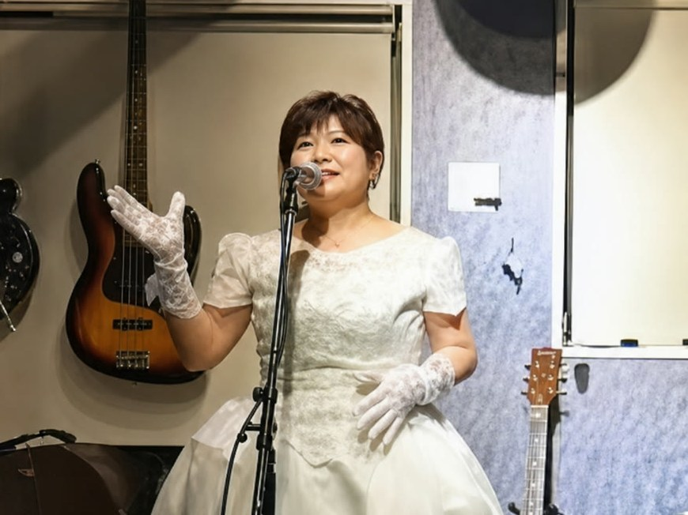
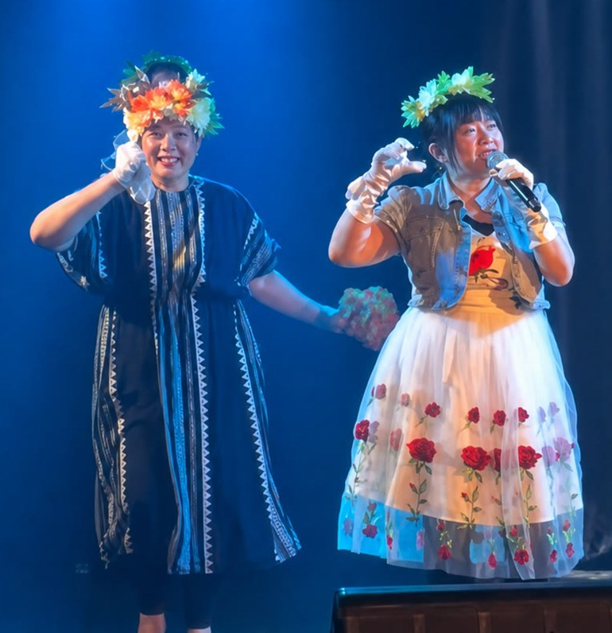
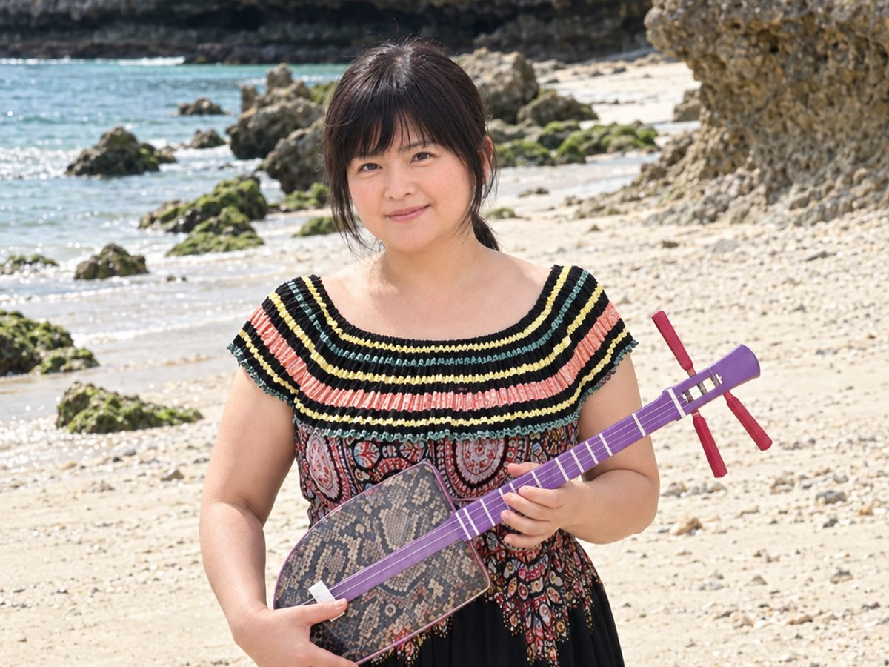
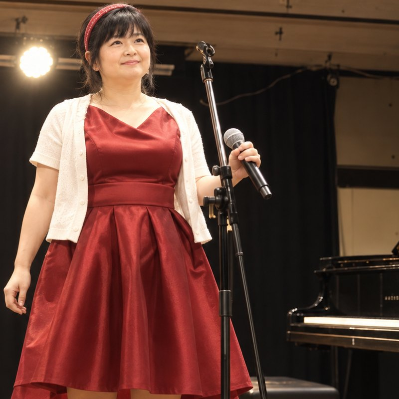
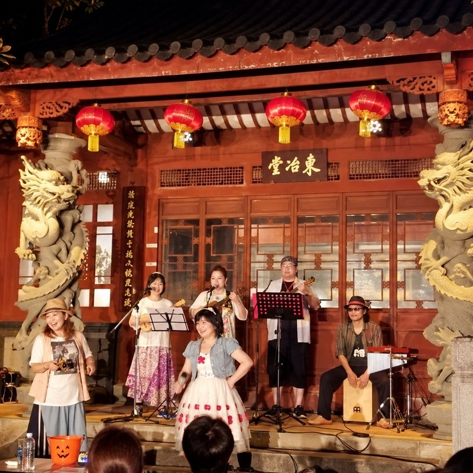
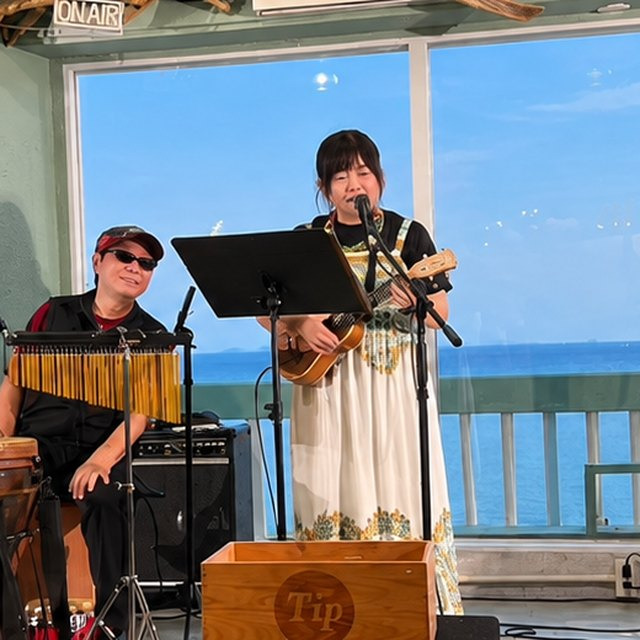
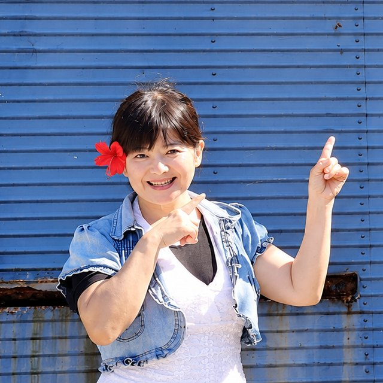
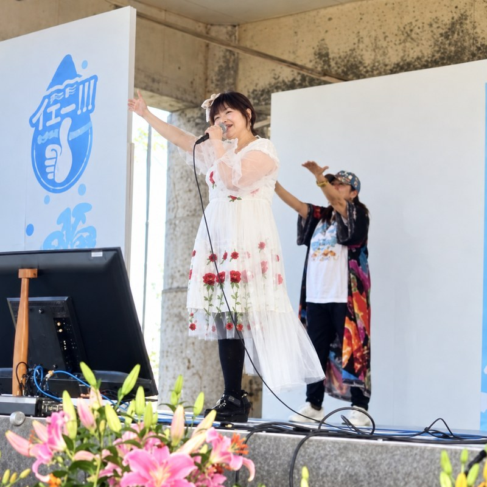
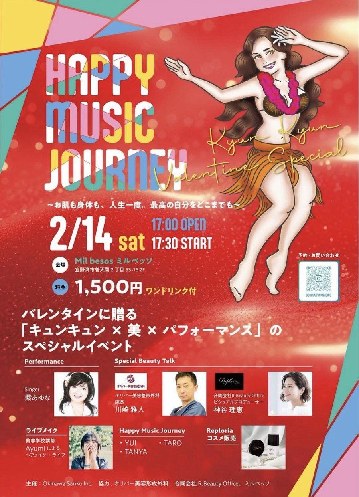

ご相談
お問い合わせフォームから、日にちと場所、どんな会かをお知らせください。まだ決まっていない段階でも構いません。
Live
80年代のアイドルの曲と沖縄の歌を、ウクレレとサンレレの弾き語りもまじえて。地域のお祭りから企業の催しまで、うかがいます。

What I Do

LIVE
地域のお祭り、企業の催し、子ども向けの企画、施設でのイベントなど。80年代のアイドルの曲を中心に、その場のみなさまに合わせて曲を選びます。
聴くだけでなく、一緒に歌ったり手拍子をしたりできる時間をおつくりします。

MUSIC
ウクレレと、沖縄生まれのサンレレ。やわらかい音色は、小さなお子さんからご年配の方までよく届きます。
シマ歌の弾き語りもいたします。音を大きく出せない会場でも承ります。
Stage
ホール、ライブハウス、海辺、島のステージ。これまでに歌わせていただいた場所から。






History
ライブ、イベント、ラジオ、ドラマや映画まで。新しい順に並べています。
Flow
お問い合わせフォームから、日にちと場所、どんな会かをお知らせください。まだ決まっていない段階でも構いません。
時間の長さ、曲のご希望、楽器を使うかどうかなどを一緒に決めます。会場の音の設備もこの段階で確認します。
お約束の時間にうかがい、歌わせていただきます。終わりましたら、写真やご感想もぜひお聞かせください。
For Fans
FAN CLUB
出演の予定や、次にどこで歌うかは、公式LINEでお知らせしています。ファンクラブはどなたでもご入会いただけます。ライブのお席は、仮のお申し込みをいただいたあと、折り返しのご連絡で確定いたします。
出演予定とチラシは、Instagram と Facebook にも載せています。